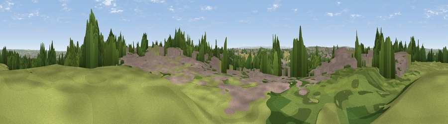

Viewpoint near Churwell
#24297 in England · top 38% of its area beats it · near ChurwellWhere it is
The exact computed spot (SE 29375 28275). Click the marker for map links.
The view, rendered

A 360° render of this exact spot computed from the terrain model, tree cover and land cover — summer colours, afternoon light, calibrated against photographs of famous viewpoints. Real trees, hedges and buildings will differ in detail.
The panorama
Grey silhouette: terrain skyline in each direction (720 bearings, Earth curvature and refraction included). Dashed green: skyline with trees (+15 m) and buildings (+8 m) as obstacles. Blue strip: how far the ground is visible on each bearing.
Where the view opens
Wedge length = distance to the farthest visible ground on that bearing (vegetation-aware). Rings at 10, 25 and 50 km.
What fills the view
32% grassland · 32% woodland · 28% built-up · 7% cropland
Angular shares of the visible panorama (visual magnitude), not map area. Landscape diversity 0.56 (0–1 Shannon).
Key numbers
More beautiful places nearby
The staircase of upgrades: each row has a higher view potential than everything closer. Driving times are estimates from straight-line distance, calibrated against real road routing — check an actual route before setting out.
| Place | Direction | Drive | Score |
|---|---|---|---|
| Viewpoint near Churwell | W · 0 km | ~1 min | 53.9 |
| Viewpoint near Woodkirk | SW · 4 km | ~10 min | 62.1 |
| Rawdon Trig point | NNW · 14 km | ~25 min | 69.6 |
| Rawdon Billing | NNW · 14 km | ~25 min | 73.0 |
| Viewpoint near Otley | NNW · 18 km | ~32 min | 77.5 |
| Hood Hill | NNE · 57 km | ~79 min | 79.6 |
| Viewpoint near Thirlby | NNE · 59 km | ~81 min | 81.5 |
| White Brow | WSW · 65 km | ~88 min | 82.9 |
53.75002, -1.55602 · source: screening · position refined by local search. Computed location — check access rights before visiting.